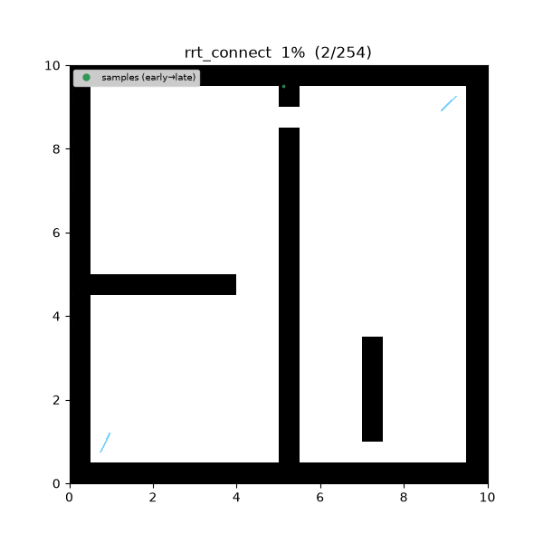
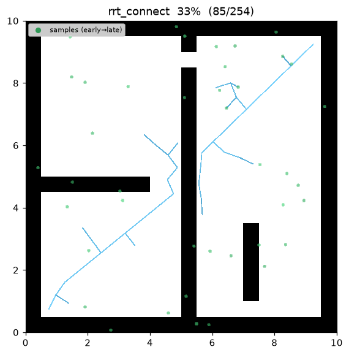
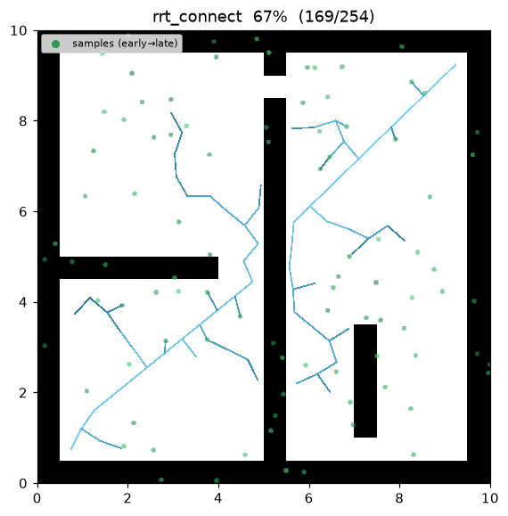
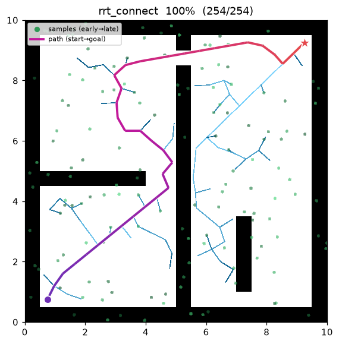
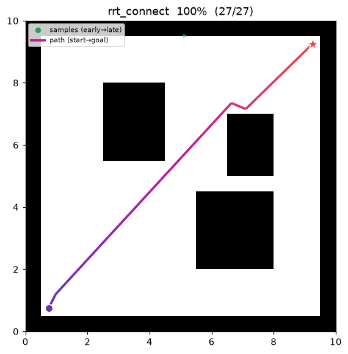

RRT-Connect¶
| 항목 | 내용 |
|---|---|
| 분류 | sampling-based, bidirectional, single-query |
| 요구 capability | SamplingSpace |
| 완전성 | probabilistically complete |
| 최적성 | 비최적 (feasible) — 경로 길이를 최소화하지 않는다 |
| 복잡도 | 반복당 EXTEND 1회 + 그리디 CONNECT(연속 EXTEND) |
| 원 논문 | Kuffner & LaValle (2000) 1 |
배경¶
Kuffner 와 LaValle1 는 단일 트리 RRT2 를 양방향으로 확장한 RRT-Connect 를 제안했다. start 에 뿌리를 둔 트리 \(T_a\) 와 goal 에 뿌리를 둔 트리 \(T_b\) 를 동시에 키우고, 매 반복에서 한 트리를 무작위 표본 쪽으로 한 걸음 뻗은 뒤(EXTEND), 다른 트리를 그 새 노드 쪽으로 막힐 때까지 연속으로 뻗어(CONNECT) 두 트리가 만나면 종료한다.
두 트리가 서로를 향해 자라므로 goal 방향으로 표본을 편향(goal bias)할 필요가 없다 — 양방향 성장
자체가 목표 지향성을 제공한다. 그래서 이 구현은 goal_bias 파라미터를 두지 않는다.
동작 원리¶
maze01 에서의 탐색. 두 트리 — start 에 뿌리를 둔 트리와 goal 에 뿌리를 둔 트리 — 가 동시에
자라며 고정된 목표가 아니라 서로를 향해 뻗어가므로, 파면이 맵 양 끝에서 동시에 확장된다.

탐색 중간 과정 (좌 → 우: 초반 / 중반 / 최종 경로):
 |
 |
 |
open01 최종 결과 — 장애물이 거의 없어 CONNECT 의 탐욕적 stride 로 단 몇 번의 반복만에 두 트리가
만난다:

핵심은 CONNECT 이다. 단순 양방향 RRT 는 반복마다 각 트리를 한 걸음씩만 뻗지만, RRT-Connect 는 CONNECT 에서 대상 노드에 닿거나 장애물에 막힐 때까지 탐욕적으로 연속 EXTEND 한다. 자유 공간에서는 한 번의 CONNECT 가 여러 step 을 한 번에 가로질러, 표본당 트리 성장 폭을 크게 키운다.
트리는 표본 공간에 대한 Voronoi 편향으로 미탐색 영역으로 빠르게 퍼지고(LaValle & Kuffner 2001), 양쪽에서 동시에 퍼지므로 좁은 통로가 하나만 있는 맵에서도 단일 트리보다 빨리 관통한다.
RRT_CONNECT(start, goal):
Ta ← {start}; Tb ← {goal}
for it in 1..max_iterations:
q_rand ← sample() # goal bias 없음
q_new ← EXTEND(Ta, q_rand)
if q_new ≠ Trapped: # Advanced
if CONNECT(Tb, q_new) = Reached: # 두 트리가 만남
return SPLICE(Ta, Tb, q_new) # start … q_new … goal
SWAP(Ta, Tb) # 다음 반복엔 역할 교대
return failure
EXTEND(T, q): # 한 걸음
q_near ← nearest(T, q)
q_new ← steer(q_near, q, step_size)
if is_motion_valid(q_near, q_new):
T.add(q_new, parent = q_near)
return q_new # Advanced
return Trapped
CONNECT(T, q): # 막힐 때까지 연속 EXTEND
repeat:
s ← EXTEND(T, q)
until s = Trapped or ‖s − q‖ ≤ goal_tolerance
return Reached if ‖s − q‖ ≤ goal_tolerance else Trapped
Splice(경로 접합). CONNECT 가 Reached 로 끝나면 \(T_a\) 는 뿌리에서 \(q_{\text{new}}\) 까지, \(T_b\) 는 뿌리에서 접점까지의 가지를 갖는다. 두 가지를 접점에서 이으면
가 된다. 매 반복 SWAP 으로 어느 트리가 start-트리인지 바뀌므로, 접합 시점에 확장 트리가 goal-트리 였다면 전체 경로를 뒤집어 항상 start 에서 시작해 goal 에서 끝나도록 방향을 맞춘다.
종료 보장. steer 는 대상과의 거리가 step_size 이하이면 대상으로 클램프한다. 따라서 CONNECT
의 매 Advanced step 은 대상 쪽으로 단조 전진하고, 최대 \(\lceil \lVert\cdot\rVert/\texttt{step\_size}\rceil + 1\)
걸음 안에 Reached 또는 Trapped 로 끝난다 — 내부 루프에 별도 상한이 필요 없다.
재현:
python python/demos/demo_rrt_connect.py \
--map maps/grid/maze01.yaml --scenario maps/scenarios/maze01_s1.yaml \
--params configs/global_planning/rrt_connect.yaml --trace out/rrt_connect.jsonl
python tools/viz/replay.py out/rrt_connect.jsonl --gif out/viz/rrt_connect/py/rrt_connect.gif \
--snapshots out/viz/rrt_connect/py/
GIF 애니메이션·중간 과정 PNG 는 위 replay.py 로 별도 생성한다(out/ 은 gitignore).
성질¶
| 성질 | 내용 |
|---|---|
| 완전성 | probabilistically complete1 — 해가 존재하면 반복 수가 늘수록 찾을 확률이 1 로 수렴 |
| 최적성 | 비최적. 첫 feasible 경로를 반환하며 경로 길이를 개선하지 않는다 |
| goal bias | 없음 — 양방향 성장이 목표 지향성을 대신한다 |
| 속도 | 그리디 CONNECT 의 긴 stride 로 단일 트리 RRT 보다 대개 빠르게 관통 |
| 반환 실패 | max_iterations 소진 시 빈 경로 · cost 0.0 |
파라미터¶
| 이름 | 타입 | 기본값 | 범위 | 설명 |
|---|---|---|---|---|
max_iterations |
int | 4000 | [1, 200000] | 최대 EXTEND/CONNECT 반복 수 |
step_size |
float | 0.5 | [0.01, 100.0] | steer 확장 거리 eta (meters). EXTEND·CONNECT 공용 |
goal_tolerance |
float | 0.3 | [0.0, 100.0] | CONNECT "Reached" 판정 거리 (meters) |
seed |
int | 1 | [0, 2³¹−1] | 난수 시드 (재현성) |
방출 trace 이벤트¶
planning_started → sample_drawn* → edge_added* → path_found → planning_finished
sample_drawn 은 반복마다의 균등 표본, edge_added 는 EXTEND/CONNECT 로 트리에 붙는 모든 간선
(양 트리 공통), path_found 는 접합된 최종 경로에서 한 번 방출된다.
References¶
-
Kuffner, J. J., & LaValle, S. M. (2000). "RRT-Connect: An efficient approach to single-query path planning." Proc. IEEE ICRA, 995–1001. doi:10.1109/ROBOT.2000.844730 ↩↩↩
-
LaValle, S. M. (1998). "Rapidly-exploring random trees: A new tool for path planning." Technical Report TR 98-11, Computer Science Dept., Iowa State University. ↩